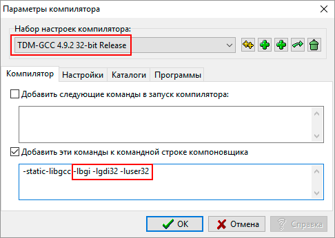

MonoDevelop
Учебная библиотека SFML для C#
Графика на Python
Dev C++
- Установщик Dev C++
-
Простая графика
Скачивайте архив, разархивируйте в любую папку и запускаете файл install.bat от имени администратора
Команды для компоновщика: -lbgi -lgdi32 -luser32
